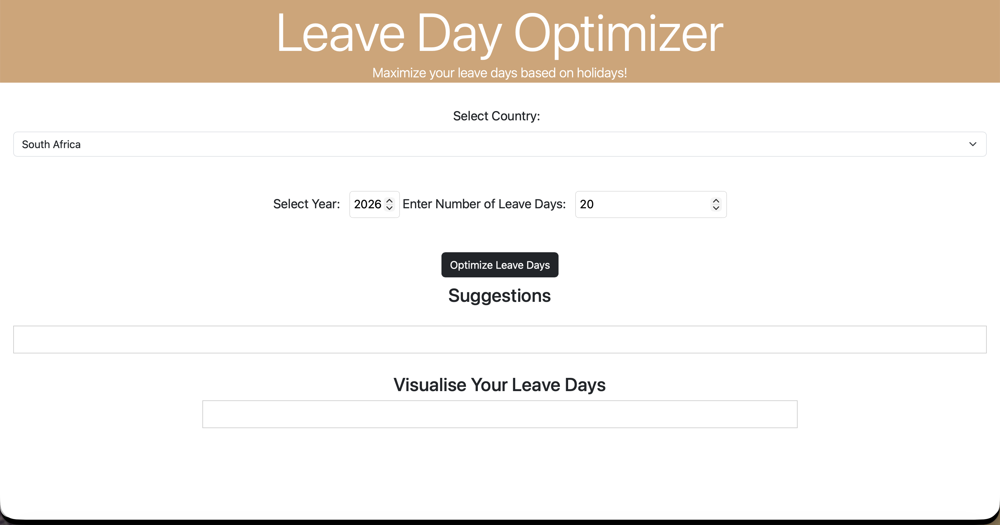
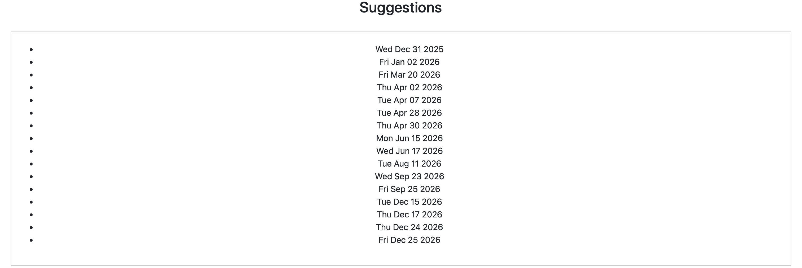
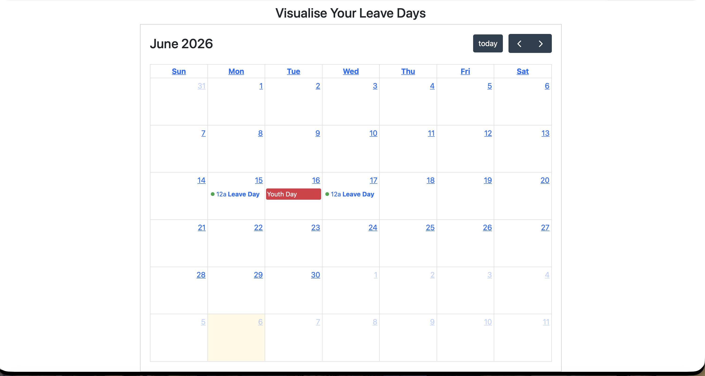
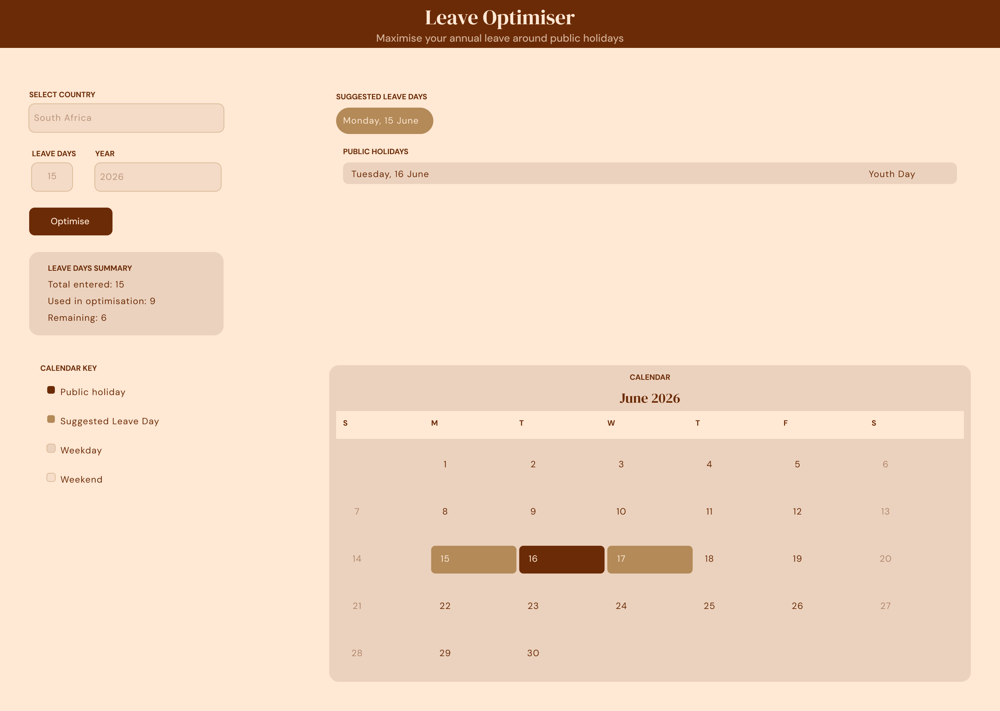

UX Audit · UI Design · Personal Project
Redesigning a tool I built before I knew what design was
Overview
The Leave Optimiser started with an Instagram story. A friend posted a list of Botswana's public holidays for the year with notes on how to strategically place leave days around them to create longer breaks. It was genuinely useful, and it was going to disappear in 24 hours. So I built a tool instead.
The MVP covered both Botswana and South Africa, recognising that the problem wasn't unique to one country. The Leave Optimiser lets you select your country, input your remaining leave days, and get back a list of the best dates to take off based on proximity to public holidays with a calendar visualisation to help you plan.
Two years after coding the MVP, I came back to it with UX training behind me. What I found was a tool that worked and an experience that didn't.
Working Hypothesis
The assumption going into the redesign was that the problems were cosmetic – a colour pass, better typography, tidier spacing. What the audit revealed was that they were structural. The layout, the output format, and the absence of any visual language were each independently undermining the tool's usefulness. A cosmetic fix would have solved none of them.
The Problem
The layout worked against the user
Inputs were stacked vertically, creating unnecessary scroll and making the form feel heavier than it needed to be for something rather simple.
The results were data, not insight
The tool returned a plain bullet list of dates – no context, no visual anchor, no connection between the suggested day and the holiday it was bridging. A user had to do the interpretation themselves.
There was no design language
No colour intentionality, no typographic hierarchy, nothing that communicated the tool had been built with care. For a planning tool, trust is a design problem. The original UI didn't earn it.
The Process
Before touching a single hi-fi screen, I built the design system from scratch. This meant defining everything as Figma Variables rather than static values – 8 colour tokens, 8 spacing and radius values, and 6 text styles. The goal was a system where changing one value would update every component that used it, rather than hunting through screens manually.
The colour palette came from deliberate emotional intent. I wanted the tool to feel grounding and serene, the opposite of the anxiety most people feel about annual leave running out. The terracotta and sand tones carry warmth without urgency. With the palette defined as roles – primary, accent, surface, background – rather than just hex codes, every design decision had a clear rationale behind it.
Components were built before screens. Buttons in three states (default, hover, disabled), input fields in two states (default, focused), and calendar day cells in four states (weekday, weekend, public holiday, suggested leave day/bridge days) – all as Figma component sets with named variants. This meant the hi-fi screen was assembled from a library of decisions already made, not a collection of one-off elements.
Before & After
The original tool was functional but gave no visual cues about priority, context, or hierarchy. Suggestions appeared as a plain bulleted list. The calendar was a generic library component with no custom styling. The layout required scrolling to see results.
The redesigned interface presents everything on a single screen without scrolling. Suggested bridge days appear as labelled pills showing which holiday they bridge. Public holidays are listed with their names alongside the dates. The calendar uses colour directly – deep brown for public holidays, warm tan for bridge days – so the logic is scannable without reading.

The original layout — vertically stacked inputs with no visual hierarchy, requiring scroll to reach results.

Suggestions returned as a plain bullet list — dates without context, no connection to the holiday being bridged.

The calendar — a generic library component with no custom styling, using red for public holidays and green dots for leave days.

The redesign — two-column layout, everything on one screen. Bridge days as labelled pills, colour-coded calendar, full design system in place.
Impact
The redesign hasn't been coded yet – the current live version at leave-optimiser.vercel.app is still the original MVP. Implementation is the next step, not a completed one.
What does exist is the LinkedIn response to the original tool. When I posted about the Leave Optimiser, the reaction from people in my network was immediate – the concept resonated. That response is what confirmed the problem was real and worth solving properly, not just shipping quickly.
The redesign addresses all three audit findings. The two-column layout eliminates unnecessary scroll. The calendar visualisation makes the bridge day logic immediately scannable without reading a list. The design system gives the tool a visual language that communicates care and builds trust. Whether those decisions hold up will be confirmed once the redesign is live and in front of real users.
Learnings
The most clarifying moment in this project was realising that the three problems I identified in the audit weren't interface problems – they were communication problems. The tool knew the right answer. It just had no way of showing you why it was right.
That distinction, between a tool that outputs data and an interface that delivers insight, is something I understood abstractly before this project, and working through the redesign made it concrete. Every decision in the new interface (the pills, the colour coding, the single-screen layout) exists to close the gap between what the algorithm knows and what the user understands.
Reflection
I built the original Leave Optimiser as a developer. I didn't think about hierarchy or trust or what it feels like to get back a list of dates with no explanation. I thought about whether the algorithm was correct. And it was correct, it just wasn't clear.
Coming back to this tool after learning UX design is the most direct evidence I have of what that training actually changed. The logic didn't need to improve, the communication however did – recognising that distinction and knowing what to do about it, is the difference between building something functional and designing something useful.
This project is also unfinished in a way I want to be honest about. The redesign is complete in Figma. The live tool hasn't been updated yet. The case study you're reading describes a design decision, not a shipped product. That gap closes when the implementation does and that's next.
Next Steps
Let's talk